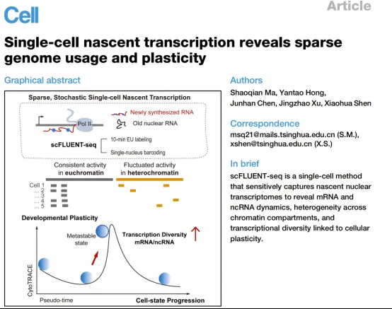
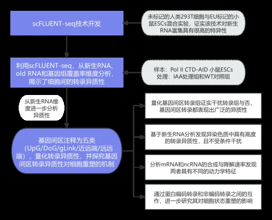
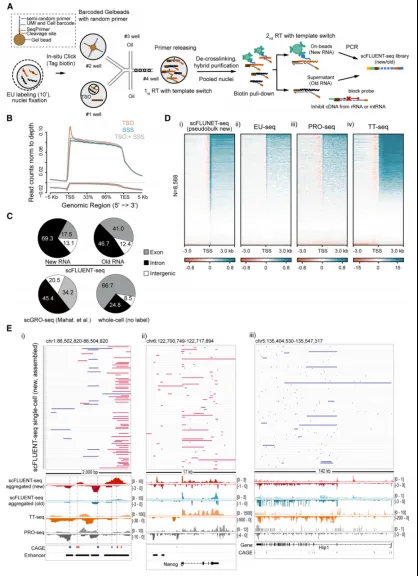
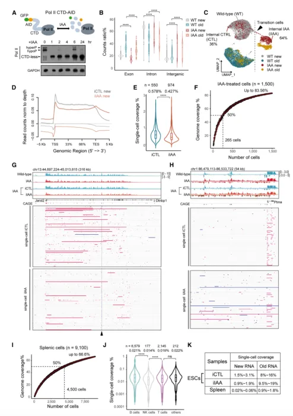
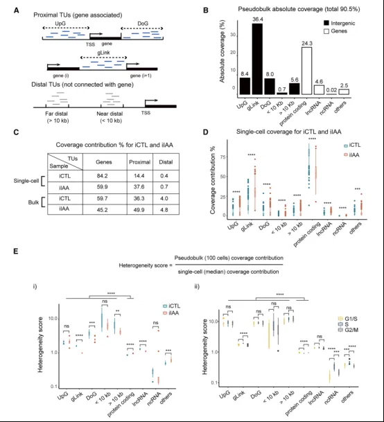
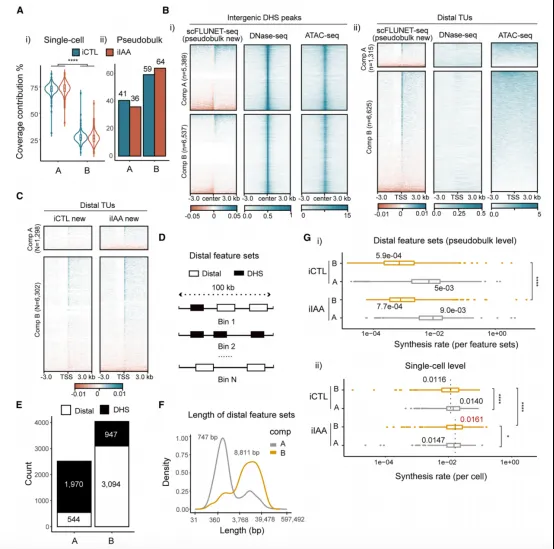
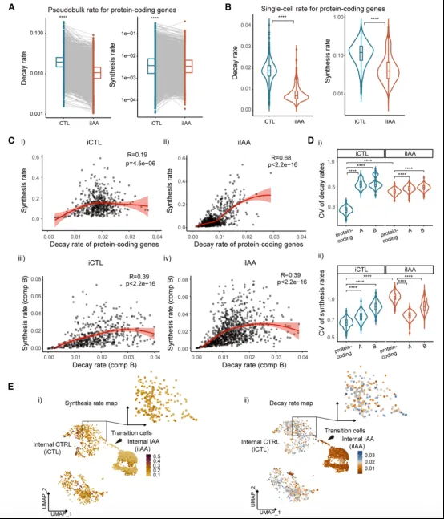
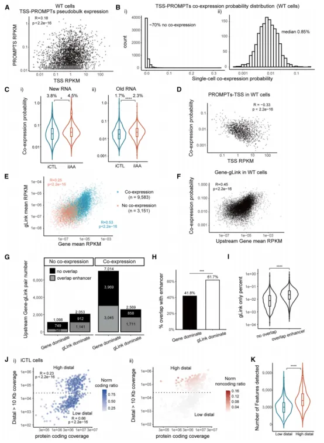
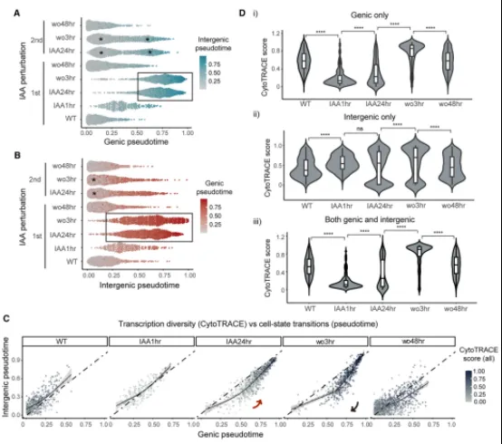

9月新《Cell》∣单细胞新生转录的稀疏性和异质性揭示细胞可塑性
原文：https://mp.weixin.qq.com/s?__biz=MzAwMzIzOTk5OQ==&mid=2247531278&idx=1&sn=2afea15e9aa80c2cd6492804b23ba2bc&chksm=9b3c025eac4b8b48b8df7be9e4c42377a83b6b2d02bc96004afb58f024ac898da9851f1a8da9#rd 合集：文献速递
一、写在前面
基因组通过转录生成RNA分子，指导蛋白质合成并影响染色质和细胞核结构。哺乳动物基因组中超过98%为非编码区域，可产生多种非编码RNA，具有低表达和短半衰期等特征。研究新生RNA对揭示基因间非编码转录的重要性在于帮助理解基因组调控全景，而从单细胞维度研究全基因组转录动态更能有助于阐明基因组解读与细胞类型生成的关系。鉴于单细胞新生RNA测序对于理解基因组如何驱动细胞多样性至关重要，而现有RNA相关测序方法存在诸多局限，因此清华大学沈晓骅教授团队基于北京寻因生物创新性Universal Beads技术开发了一种名为scFLUENT-seq的单细胞方法，能够通过简单的代谢标记捕获全基因组范围的转录信息，具有高灵敏度和高覆盖度特点，有助于定量揭示不同染色质区域的转录动态和调控异质性。并将该技术应用于正常和转录干扰条件，聚焦RNA聚合酶II的CTD截短对转录的影响，发现CTD在mRNA和ncRNA生成中起关键作用，并协调共转录事件与RNA加工过程，CTD截短可改变转录特征，影响基因编码区和基因间区的转录及其对细胞状态的作用。DOI: doi.org/10.1016/j.cell.2025.09.003

如果需要单细胞数据分析教学 、生信热点全文复现 、自测数据个性化分析 辅导、常态化实验学习，欢迎联系客服微信[Biomamba_zhushou]
**二、技术路线 **

**三、主要结果 **
1、scFLUENT-seq的开发基于寻因生物创新性Universal Beads技术开发的scFLUENT-seq单细胞方法，实现通过EU标记从单细胞分辨率上检测新生RNA，并通过未标记的人类293T细胞与EU标记的小鼠胚胎干细胞（ESCs）混合实验，证实该技术对新生RNA富集具有很高的特异性。其次，scFLUENT-seq数据显示，新生RNA中69%的高置信度读段位于内含子区域，比例显著高于old RNA和scGRO-seq数据。单细胞RNA测序未进行代谢标记时，仅25%读段对应内含子区域，呈现典型稳态RNA分布特征。scFLUENT-seq分析与bulk 新生RNA测序结果一致，能高效捕获启动子相关正向和反向信号。基因组浏览器图谱显示，scFLUENT-seq检测的新生RNA信号更接近CAGE（Cap Analysis of Gene Expression）分析，与TT-seq和PRO-seq存在一定差异。长时间EU标记实验表明新生RNA捕获效率约为55%，DNase对照实验证实了scFLUENT-seq几乎不存在基因组DNA污染。

图1 scFLUENT-seq的开发 2、scFLUENT-seq揭示了细胞间的转录异质性通过改造的小鼠胚胎干细胞系Pol II CTD-AID，结合scFLUENT-seq技术，揭示了CTD截短对转录的即时影响，包括转录起始位点信号降低和基因间区RNA增加。UMAP聚类结果显示，IAA处理后细胞可分为iCTL（在新生RNA和old RNA层面上均与野生型细胞聚集在一起，对IAA的响应较弱）和iIAA两组，其中iIAA组表现出显著的转录变化及异质性，部分细胞处于过渡状态。scFLUENT-seq分析显示iCTL细胞基因组覆盖中位数为0.58%，而iIAA为0.43%，表明后者转录活性下降，考虑到RNA捕获效率、严格reads过滤等因素，iCTL单细胞中仅1.5%-3.1%基因组参与转录。另检测小鼠脾细胞的新生RNA覆盖率仅为0.02%-0.06%，显著低于ESC，而old RNA覆盖率也较低，反映了不同细胞类型的转录活性差异。单细胞与伪bulk分析显示，尽管个体细胞转录覆盖率低，但汇总数据接近群体水平，强调了细胞间的高度异质性，这促使我们量化细胞间的转录异质性。
图2 Pol II CTD-AID小鼠胚胎干细胞系的scFLUENT-seq结果分析 3、基因组范围内的基因间区转录本注释结合GENCODE和RefSeq注释，将mRNA、lncRNAs、ncRNAs以及其他已注释的RNA统称为“基因”，将剩余的基因组区间根据与基因的相对位置分为近端（proximal）和远端（distal）两类，近端包括UpG、DoG和gLink，远端按距离分为近远端（< 10 kb）和远远端（> 10 kb）独立转录单元（TUs）。分析发现基因在单细胞水平贡献约84%的转录覆盖度，而近端和远端基因间区转录单元在群体水平占比更高，特别是gLink显著增加。在iIAA细胞中，蛋白编码基因覆盖度降低，但gLink覆盖度显著增加，证实CTD在限制基因间区转录中的作用。尽管基因间区转录在细胞间跨越了更大的基因组区域，但与单个细胞内的基因转录相比，它对整体转录活性的贡献要小得多。此外，通过计算异质性分数量化转录异质性，结果显示ilAA细胞基因间TUs异质性评分更高，且细胞周期无相关性。总之，这些结果共同表明，在正常和转录受干扰的条件下，基因间区转录都表现出广泛的异质性。
图3 全基因组范围内转录活性的注释和定量 4、异染色质中具有高度的转录异质性通过估算单细胞转录覆盖度来分析常染色质（A区域）和异染色质（B区域）的转录情况，结果显示A区域的转录活性约为B区域的2.7倍，但在伪bulk分析时，B区域转录覆盖度显著增加，表明B区域转录更为分散。随后通过比较单细胞新生转录组与染色质可及性来分析基因间区在不同染色质区域中的转录活性，发现不仅开放染色质区新生RNA活跃，远端转录单元（TUs）在缺乏染色质开放信号的情况下仍表现出转录活性，尤其在iIAA细胞中略有增强，这也显示scFLUENT-seq技术的高灵敏度。基因间区DHSs主要富集于A区域，而远端TUs多位于B区域，B区域特征集合的聚合长度更长，与转录单元分布一致。伪bulk分析显示B区域RNA合成速率低于A区域，但单细胞水平上两者差异较小，表明B区域中基因间区TUs的表达具有高度异质性。CTD缺失可能降低异染色质限制，使B区域基因间区RNA合成速率在iIAA细胞中显著增加，揭示异染色质转录的高度动态特性。总之，异染色质较常染色质表现出更大的转录异质性，且为细胞固有特性，无论是否受干扰。
图4 染色质区室的转录异质性 5、mRNA和基因间非编码RNA具有不同的动力学特征研究通过scFLUENT-seq数据分析mRNA和ncRNA的合成与降解速率，发现核RNA降解速率不同于全细胞RNA，且iIAA细胞中两者的半衰期较iCTL细胞延长1.8至2.4倍。在单细胞和伪bulk水平上，iIAA细胞中mRNA合成和降解速率同时降低，表明全局耦合维持核RNA水平，但iCTL和iIAA单细胞内两者相关性较低。而基因间TUs在常染色质和异染色质区域表现出更高的合成与降解速率相关性，且基因间非编码RNA的生成和降解速率的变异系数大于mRNA，表明其调控较少且更随机。iIAA细胞中mRNA合成和降解速率高度相关（R = 0.68），并向低活性范围偏移。iIAA细胞的基因间TUs降解速率下降但相关性不变，而蛋白编码基因的合成与降解速率变异系数显著增加，表明CTD依赖性调控机制可能丧失。
图5 mRNA和基因间非编码RNA之间不同的RNA合成和降解动力学 6、非编码RNA转录的局部和全局的影响为了探索蛋白编码转录和非编码转录之间的局部相互作用，将基因TSS上游500bp范围内的反义RNA称为“PROMPTs”，正义转录称为基因的“TSS”信号，伪bulk分析显示PROMPTs和配对的TSS转录本之间存在微弱的正相关性（R=0.18），但共表达概率低，表明两者很少同时存在且可能具有抑制关系。此外，PROMPT-TSS共表达概率与TSS表达水平呈负相关（R = -0.33），这表明TSS的转录可能抑制PROMPTs的表达，而观察到的少量共表达很可能是随机行为的结果。相比之下，上游基因与gLink对之间显示出较强相关性，且共表达概率随着基因表达水平的增加而增加，这表明存在基因活性依赖的转录通读。综合来看，这些发现表明，参与转录的RNA聚合酶II（Pol II）主要朝一个方向移动，而这种方向性进一步通过CTD介导的过程得到加强。近端gLink活性与基因转录高度相关，而远端TUs相关性较弱。iIAA细胞分为两个簇，顶部簇具有更高的转录多样性及远端TUs覆盖水平，暗示这些亚群具有更高的可塑性。
图6 基因间区转录的局部和全局的影响 7、利用新生转录多样性捕获关键状态转换最后，研究基因编码区和基因间区转录对细胞在状态转换期间的可塑性的影响。通过两轮IAA处理及洗脱实验，发现基因表达在干扰期间快速变化，而基因间转录单元呈现渐进且重叠的转换，表明基因间表达具有稳定性。使用预测细胞命运可塑性的CytoTRACE算法分析显示，基因编码区的分数在IAA处理后迅速下降并反弹，而基因间区分数稳步上升，基因编码区的分数变化和包含基因和基因间区的分数变化趋势一致，揭示基因编码区转录主导细胞可塑性。在IAA洗脱3小时后，野生型Pol II重新表达，转录活性部分恢复，细胞表现出瞬时最高的转录多样性，但基于表达水平的拟时序分析显示未发生显著细胞状态转变。综合来看，基因编码区的转录在细胞状态之间迅速波动，而基因间区的转录则更为连续，缓冲基因表达的变化，并促进细胞的稳定性和可塑性。基因编码区和基因间区转录之间的这种相互作用揭示了细胞可塑性可在基因表达程序重大变化前出现，并形成亚稳态以支持状态转换。
图7 通过新生转录多样性捕获关键状态转换**三、总结 **
本研究开发了一种新的单细胞测序技术scFLUENT-seq，能够以极高的灵敏度和全基因组覆盖范围捕获新生和成熟转录组，揭示了单细胞中转录组的动态与异质性。实验结果表明，单细胞实际利用的基因组功能区域不到3.1%，远低于群体水平的估算，并且基因间区和异染色质区域的随机转录显著增强细胞可塑性和多样性。此外，转录异质性在全基因组范围内普遍存在，而RNA合成与降解的协调依赖于Pol II CTD，突显其在维持转录稳态中的关键作用。
五、参考文献
[1]: Cacchiarelli, D., & Furlanello, C. (2020). Single-cell nascent transcription reveals sparse genome usage and plasticity. Nature Reviews Genetics, 21(11), 663–676. https://doi.org/10.1038/s41576-020-0239-x

如何联系我们

 留一个领取资料、开箱即用的单细胞分析镜像的微信号[Biomamba_zhushou]，方便各位随时交流。同时我们也构建了交流群矩阵，欢迎大家入群讨论。
大家可以阅读完这几篇之后添加给生信入门初学者的小贴士
没有检索，就没有发言权
留一个领取资料、开箱即用的单细胞分析镜像的微信号[Biomamba_zhushou]，方便各位随时交流。同时我们也构建了交流群矩阵，欢迎大家入群讨论。
大家可以阅读完这几篇之后添加给生信入门初学者的小贴士
没有检索，就没有发言权
已有生信基地联系方式的同学无需重复添加

 您点的每个赞和在看，我都认真当成了喜欢
您点的每个赞和在看，我都认真当成了喜欢